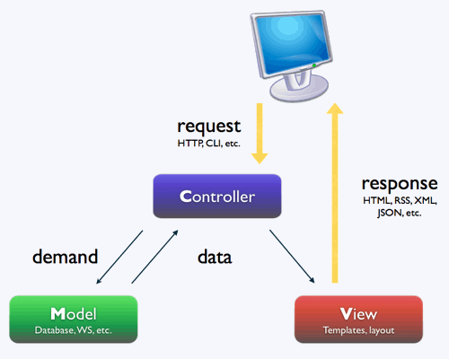
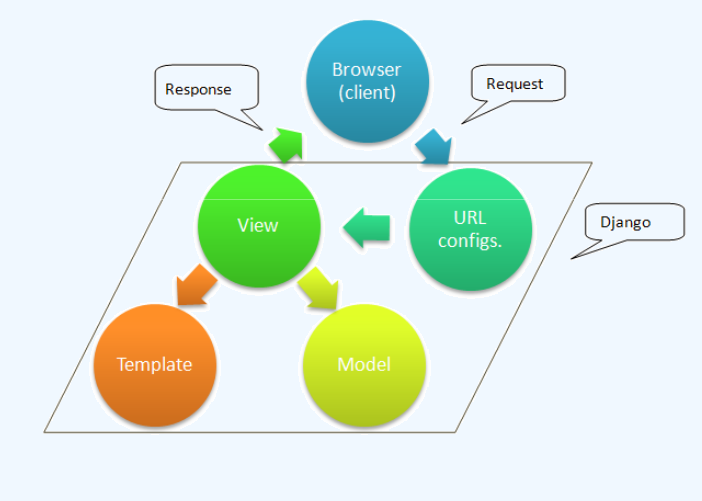
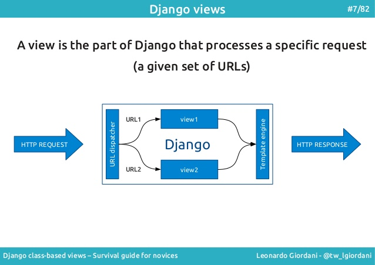
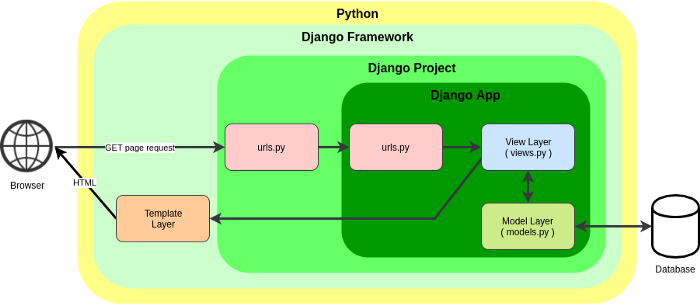
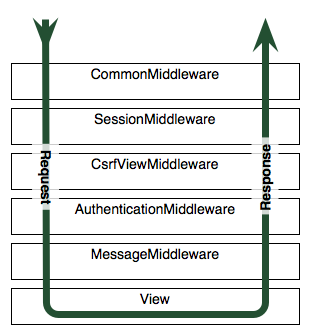

DJANGO
Sistemas Software Basados en Web
DJANGO
Es el framework más usado en python, empezo a desarrollarse como herramienta para sitios de prensa en 2008
5 Reasons Why You Should Learn Django,
Why Django?,
Why I love Python (and Django)?
Django vs Flask
| Flask | Django |
|---|---|
| MicroFamework (librería) 2 MB | Framework (librería + scripts) 7 MB |
| Más ligero y adaptable | Incluye ORM, autenficación de usuarios totalmente resuelta, interface de adminstración de la BD, etc | Se hace menos código para empezar | Código ya hecho |
| Programas en python | Programas en 'django' |
| Extensiones | Packages |
| Pirates use Flask, the Navy uses Django | Aunque ... |
Modelo Vista Controlador
Modelo Vista Controlador

En django MVT
|
 |
Enrutador
Enrutador
En django un proyecto puede tener varias aplicaciones compartiendo la BD
Enrutador
urls.py
from django.urls import path
from . import views
urlpatterns = [
path('excursion/todas/', views.excursion_todas),
path('excursion/<int:número>/', views.excursion),
]Mapea las urls en funciones en views.py
Model
- Interacción con la BD (SELECT, INSERT, UPDATE, DELETE)
- Lógica relacionada con los datos (cuanta más mejor), p.e restricciones a los datos,
campos derivados, etc
- Comunica con el controlador
model
model.py
from django.db import models
class Excursión(models.Model):
nombre = models.CharField(max_length=100)
descripción = models.CharField(max_length=1000)
likes = models.IntegerField(default=0)
con un ORM
Views
- Recibe la entrada del las vistas o urls (routing)
- Procesa los requests (GET, POST, PUT, DELETE)
- Interacciona con el modelo
- Rellena y envia las plantillas
Equivalente al Controler en MVC
Views
Controler views.py
from django.shortcuts import render
from django.http import HttpResponse
def index(request):
return HttpResponse('Hola desde index')
def excursion(request, número):
detalle = Consulta_Model(excursion=número)
context = {
'excursion': número, # se pasan las variables al template
'detalle': detalle
}
return render(request, "excursion.html", context)
Templates
- Donde interacciona el usuario
- Usualmente HTML, CSS y JavaScript
- Comunica con el controlador
- A traves de plantillas (templates)
Equivalente al View en MVC
Templates
<html>
...
<div>
Excursión número {{ número }} <br>
{{ detalle }}
</div>
...
</html>

Flujo de datos M V T
MÓDULOS
django incluye:
middleware
|  |

|
Parte del proceso se hace con
middleware
En su orden, van añadiendo información al request
y conformando la
Empezando
Con los scripts, django-admin.py y manage.py
> django-admin.py startproject mi_sitio_web # Un proyecto puede tener varias apps
> cd mi_sitio_web # Ha creado carpetas y subcarpetas
> python manage.py startapp mi_app # Una aplicación dentro del proyecto
Scaffolding
mi_sitio_web/ # Proyecto | ├── rutas_granada # app │ ├── admin.py # admin para la BD de app │ ├── apps.py # conf de la app │ ├── __init__.py # este dir es un package │ ├── migrations # cambios hechos en la BD SQL │ │ └── __init__.py │ ├── models.py # Modelo (clases del ORM) │ ├── tests.py # Tests │ └── views.py # Código (vista o controlador) | ├── manage.py | └── mi_sitio_web ├── __init__.py ├── settings.py # Settings del proyecto ├── urls.py # Mapeo de urls └── wsgi.py # Conexión con el servidor web de producción
Más archivos y carpetas, que conviene hacer
sitio_web/ ├── rutas_granada │ ├── admin.py │ ├── apps.py │ ├── __init__.py │ ├── migrations │ │ └── __init__.py │ ├── models.py │ ├── tests.py │ ├── urls.py # Mapeo para la app │ └── views.py | ├── manage.py | ├── mi_sitio_web │ ├── __init__.py │ ├── settings.py │ ├── urls.py │ └── wsgi.py | └── static # Archivos static └── templates # Plantillas HTML (templates, vista) └── base.html # plantilla principal └──visitas_granada # para cada aplicación └──index.html
Pasos para crear una aplicación
|
|